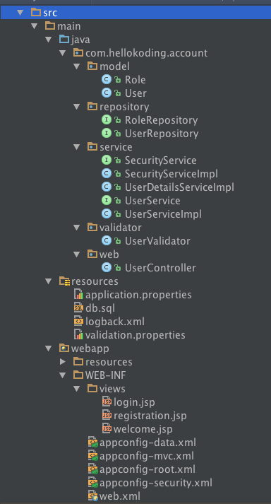

This post walks you through the process of creating a simple Registration and Login example with Spring MVC 4, Spring Security, Spring Data JPA, XML Configuration, Maven, JSP and MySQL.
If you are new to Spring MVC or Spring Data JPA, it would be best to work your way through Spring MVC 4 Hello World Example with XML Configuration, Maven and JSP or JPA Many-To-Many Relationship Mapping Example with Spring Boot, Maven and MySQL before starting this example.
Prerequisites
- JDK 1.8 or later
- Maven 3 or later
- MySQL 5.6 or later
Stack
- Spring MVC
- Spring Security
- Spring Data JPA
- Maven
- JSP
- MySQL
Project structure

Project dependencies
Database
Define JPA Entities
JPA Entity is defined with @Entity annotation, represent a table in your database.
@Table maps the entity with the table. If no @Table is defined, the default value is used: the class name of the entity.
@Id declares the identifier property of the entity.
@ManyToMany defines a many-to-many relationship between 2 entities. @JoinColumn indicates the entity is the owner of the relationship: the corresponding table has a column with a foreign key to the referenced table. mappedBy indicates the entity is the inverse of the relationship.
Spring Data JPA Repositories
Spring Data JPA contains some built-in Repository implemented some common functions to work with database: findOne, findAll, save,...
Services
Validators
Controllers
Properties
Source code
git@github.com:hellokoding/registration-login-spring-xml-maven-jsp-mysql.git
https://github.com/hellokoding/registration-login-spring-xml-maven-jsp-mysql
Tags: mvc